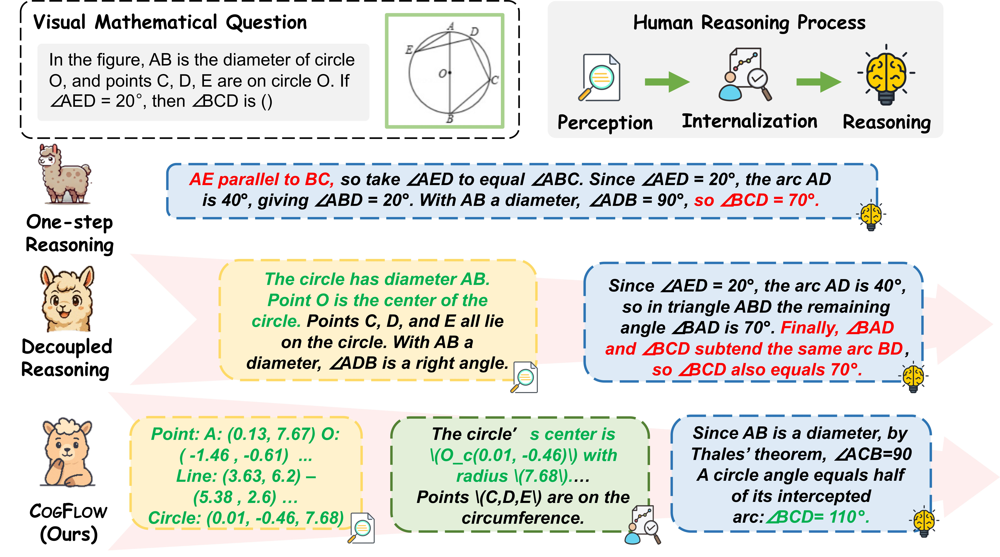
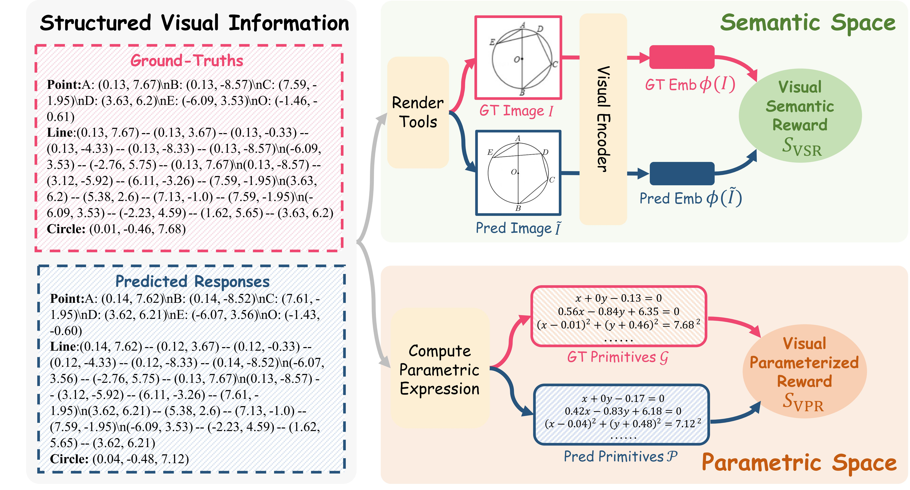
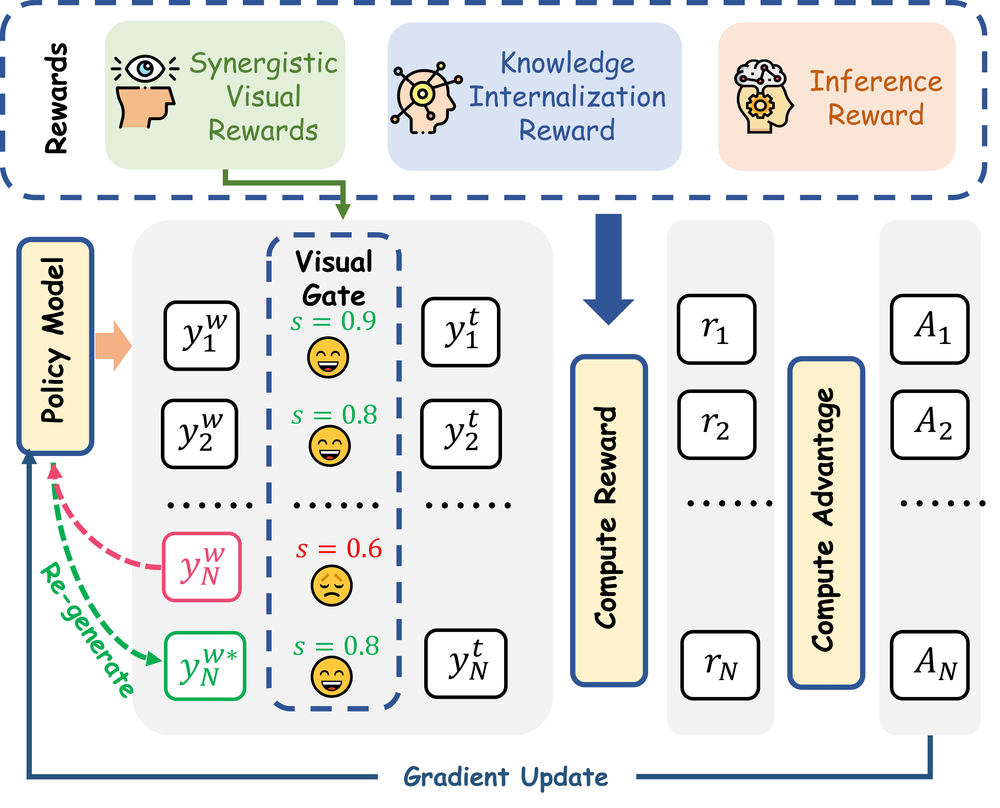
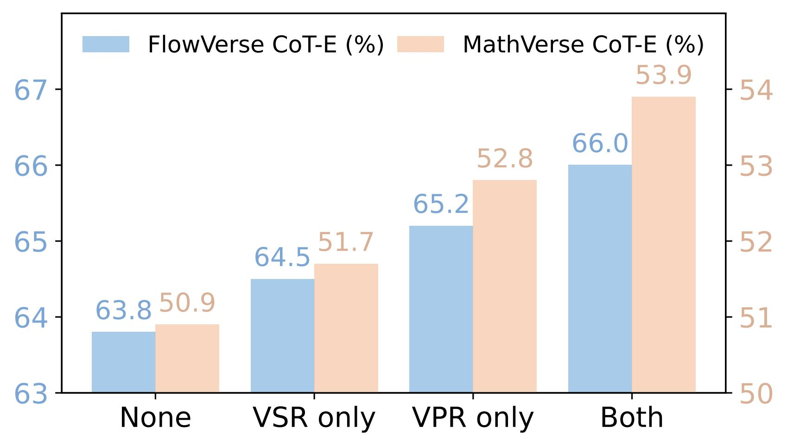
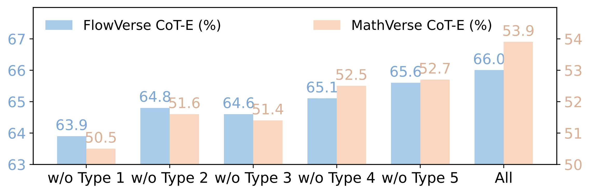
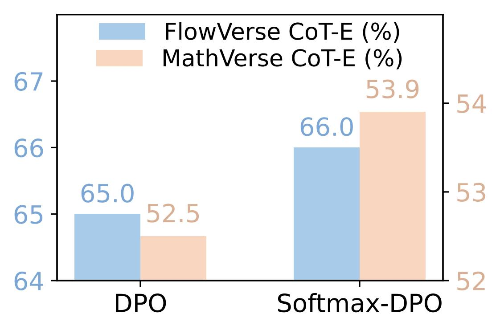
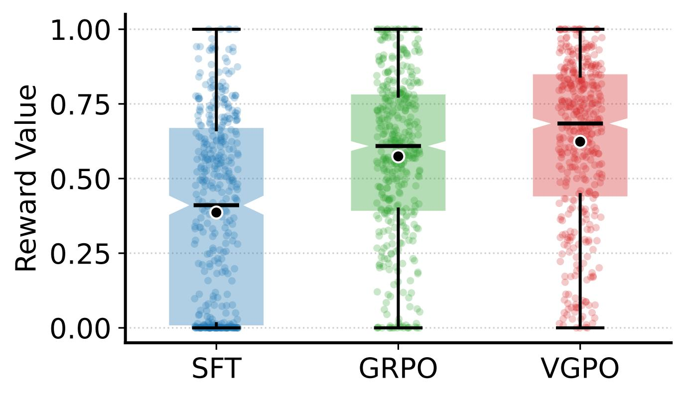
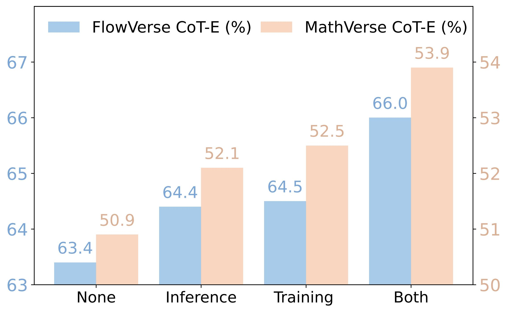
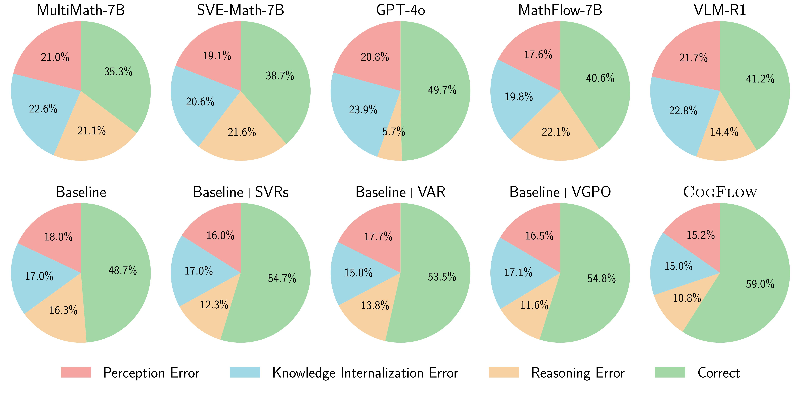

CogFlow: Bridging Perception and Reasoning through Knowledge Internalization for Visual Mathematical Problem Solving

Abstract
Despite recent advances, multimodal large language models continue to struggle with visual mathematical problem solving. Some recent works recognize that visual perception is a bottleneck in visual mathematical reasoning, but their solutions are limited to improving the extraction and interpretation of visual inputs. Notably, they all ignore the key issue of whether the extracted visual cues are faithfully integrated and properly utilized in subsequent reasoning. Motivated by this, we present CogFlow, a novel cognitive-inspired three-stage framework that incorporates a knowledge internalization stage, explicitly simulating the hierarchical flow of human reasoning: perception ⇒ internalization ⇒ reasoning. In line with this hierarchical flow, we holistically enhance all its stages. We devise synergistic visual rewards to boost perception capabilities in parametric and semantic spaces, jointly improving visual information extraction from symbols and diagrams. To guarantee faithful integration of extracted visual cues into subsequent reasoning, we introduce a visual-anchored reward model in the internalization stage, bridging perception and reasoning. Moreover, we design a visual-gated policy optimization algorithm to further enforce the reasoning is grounded with the visual knowledge, preventing models seeking shortcuts that appear coherent but are visually ungrounded reasoning chains. Moreover, we contribute a new dataset MathCog for model training, which contains samples with over 120K high-quality perception-reasoning aligned annotations. Comprehensive experiments and analysis on three commonly used visual mathematical reasoning benchmarks validate the superiority of the proposed CogFlow.
CogFlow Framework

One-step framework yields unstructured reasoning, while decoupled pipeline modularly disentangles the flow. We adopt a cognitive-inspired three-stage framework with knowledge internalization.

Workflow of SynVRs. SynVRs consist of a Visual Semantic Reward and a Visual Parametric Reward, ensuring local geometric fidelity and global perceptual coherence respectively. Together, these two complementary visual rewards provide a unified supervision mechanism for training robust and accurate visual perception.

Workflow of SynVRs. SynVRs consist of a Visual Semantic Reward and a Visual Parametric Reward, ensuring local geometric fidelity and global perceptual coherence respectively. Together, these two complementary visual rewards provide a unified supervision mechanism for training robust and accurate visual perception.
Experiments
Main results
| Model | All | Text Centric | Text Limited | Text Plus | Vision Dense | Vision Centric | Vision Primary | |||||||
|---|---|---|---|---|---|---|---|---|---|---|---|---|---|---|
| CoT-E | Acc | CoT-E | Acc | CoT-E | Acc | CoT-E | Acc | CoT-E | Acc | CoT-E | Acc | CoT-E | Acc | |
| Claude-3.5-Sonnet | 55.5 | 45.1 | 60.8 | 52.6 | 58.7 | 50.3 | 64.0 | 58.3 | 45.0 | 25.4 | 56.5 | 48.0 | 48.1 | 45.2 |
| GPT-4o | 56.9 | 49.7 | 61.0 | 56.8 | 58.7 | 54.4 | 62.2 | 58.2 | 45.2 | 30.0 | 58.6 | 52.6 | 54.1 | 51.0 |
| GPT-4V | 64.2 | 58.7 | 69.1 | 57.1 | 65.0 | 55.0 | 72.0 | 61.4 | 48.1 | 30.3 | 61.8 | 46.3 | 42.0 | 36.7 |
| MathFlow★GPT-4V | 64.2 | 59.5 | 69.5 | 58.2 | 67.2 | 57.4 | 71.1 | 64.1 | 52.7 | 47.5 | 62.1 | 57.1 | 60.4 | 57.0 |
| Gemini-2.5-pro | 64.5 | 56.2 | 68.3 | 61.9 | 66.1 | 60.8 | 68.9 | 64.1 | 52.1 | 37.1 | 65.7 | 57.9 | 57.0 | 54.6 |
| GPT-5 | 68.2 | 59.3 | 74.3 | 68.1 | 73.5 | 66.7 | 77.0 | 69.2 | 53.8 | 44.7 | 67.1 | 61.7 | 60.3 | 57.5 |
| InfiMM-Math-7B | 37.8 | 29.5 | 43.8 | 38.1 | 40.6 | 36.7 | 46.1 | 40.1 | 28.8 | 15.4 | 39.6 | 30.3 | 26.1 | 23.2 |
| InternVL2.5-8B | 46.3 | 40.1 | 49.2 | 41.3 | 40.5 | 38.4 | 49.6 | 42.7 | 38.4 | 20.2 | 41.0 | 35.9 | 35.8 | 33.9 |
| Math-LLaVA-13B | 39.3 | 30.8 | 45.1 | 39.3 | 44.4 | 37.4 | - | - | 36.2 | 18.6 | 41.7 | 35.9 | 37.0 | 34.2 |
| MultiMath-7B | 45.2 | 35.3 | 50.6 | 44.8 | 49.9 | 42.9 | - | - | 41.7 | 22.1 | 47.2 | 40.4 | 39.7 | 38.8 |
| SVE-Math-Qwen2.5-7B | 47.9 | 38.7 | 53.1 | 47.3 | 53.4 | 45.8 | - | - | 44.2 | 28.6 | 48.9 | 44.2 | 45.8 | 42.0 |
| VLM-R1-7B | 50.7 | 41.2 | 59.0 | 54.2 | 57.9 | 49.8 | 65.5 | 58.9 | 36.2 | 24.5 | 46.1 | 37.8 | 30.6 | 26.1 |
| CogFlow-7B | 66.0 | 56.2 | 67.9 | 58.6 | 67.3 | 58.3 | 68.1 | 60.9 | 57.8 | 42.7 | 68.2 | 61.1 | 66.7 | 63.5 |
| Model | All | Text Dominant | Text Lite | Text Only | Vision Intensive | Vision Dominant | Vision Only | |||||||
|---|---|---|---|---|---|---|---|---|---|---|---|---|---|---|
| CoT-E | Acc | CoT-E | Acc | CoT-E | Acc | CoT-E | Acc | CoT-E | Acc | CoT-E | Acc | CoT-E | Acc | |
| Qwen-VL-Plus | 21.3 | 11.8 | 26.0 | 15.7 | 21.2 | 11.1 | 25.2 | 14.5 | 18.5 | 9.0 | 19.1 | 13.0 | 21.8 | 10.0 |
| Gemini-Pro | 35.3 | 23.5 | 39.8 | 26.3 | 34.7 | 23.5 | 44.5 | 27.3 | 32.0 | 23.0 | 36.8 | 22.3 | 33.3 | 22.2 |
| Qwen-VL-Max | 37.2 | 25.3 | 42.8 | 30.7 | 37.7 | 26.1 | 47.9 | 28.9 | 33.6 | 24.1 | 35.9 | 24.1 | 35.9 | 21.4 |
| GPT-4V | 54.4 | 39.4 | 63.1 | 54.7 | 56.6 | 41.4 | 60.3 | 48.7 | 51.4 | 34.9 | 50.8 | 34.4 | 50.3 | 31.6 |
| MathFlow★GPT-4V | 56.7 | 43.8 | 65.2 | 51.1 | 58.9 | 46.4 | 62.1 | 48.5 | 53.7 | 40.3 | 52.1 | 37.4 | 52.5 | 39.0 |
| SPHINX-MoE-56B | 25.8 | 15.6 | 33.3 | 22.2 | 21.9 | 16.4 | 40.7 | 18.3 | 21.1 | 14.8 | 19.6 | 12.6 | 18.3 | 9.1 |
| InternLM-XC2-7B | 25.9 | 16.5 | 36.9 | 22.3 | 28.3 | 17.0 | 42.5 | 16.5 | 20.1 | 15.7 | 24.4 | 16.4 | 19.8 | 11.0 |
| Math-LLaVA-13B | - | 20.1 | - | 22.8 | - | 21.8 | - | - | - | 21.1 | - | 19.2 | - | 15.4 |
| MultiMath-7B | - | 26.9 | - | 34.8 | - | 30.8 | - | - | - | 28.1 | - | 25.9 | - | 15.0 |
| SVE-Math-Qwen2.5-7B | - | 31.4 | - | 37.6 | - | 36.8 | - | - | - | 34.9 | - | 31.5 | - | 16.0 |
| DVLR-14B | 48.1 | - | 54.3 | - | 49.0 | - | - | - | 46.3 | - | 47.2 | - | 43.8 | - |
| SophiaVL-R1-7B | 48.8 | - | 45.4 | - | 43.9 | - | - | - | 45.1 | - | 58.5 | - | 51.3 | - |
| CogFlow-7B | 53.9 | 39.5 | 60.7 | 41.9 | 51.2 | 37.0 | 52.3 | 40.1 | 55.0 | 42.4 | 58.7 | 44.8 | 44.2 | 26.3 |
| Model | All | FQA | GPS | MWP | TQA | VQA |
|---|---|---|---|---|---|---|
| GPT-4V | 49.9 | 43.1 | 50.5 | 57.5 | 65.2 | 38.0 |
| Claude-3.5-Sonnet | 67.7 | - | - | - | - | - |
| Doubao-pro-1.5 | 79.5 | 77.7 | 88.9 | 86.0 | 82.3 | 62.0 |
| G-LLaVA-7B | 25.1 | 19.1 | 48.7 | 3.6 | 25.0 | 28.7 |
| VCAR-7B | 33.7 | 30.9 | 34.6 | 38.7 | 37.3 | 28.5 |
| SPHINX-Plus-56B | 36.7 | 54.6 | 16.4 | 23.1 | 41.8 | 43.0 |
| SVE-Math-7B | 37.4 | 31.9 | 53.9 | 29.0 | 41.4 | 30.8 |
| MultiMath-7B | 50.0 | 40.1 | 66.8 | 61.8 | 50.0 | 33.0 |
| SophiaVL-R1-7B | 71.3 | - | - | - | 73.4 | - |
| ThinkLite-VL-7B | 71.6 | - | - | - | - | - |
| VL-Rethinker-7B | 73.7 | - | - | - | - | - |
| CogFlow-7B | 76.8 | 70.4 | 93.1 | 73.7 | 86.9 | 59.3 |
| Models | WeMath | LogicVista | DynaMath |
|---|---|---|---|
| Claude-3.7-Sonnet | 49.3 | 58.2 | 39.7 |
| GLM-4.5V | 68.8 | 62.4 | 53.9 |
| Doubao-1.5-Pro | 65.7 | 64.2 | 44.9 |
| GPT-5 | 71.1 | 70.0 | 60.9 |
| Gemini-2.5-Pro | 78.0 | 73.8 | 56.3 |
| Ovis-8B | 27.2 | 39.4 | 20.4 |
| Qwen2.5-VL-8B | 35.2 | 44.1 | 21.0 |
| InternVL3-8B | 37.1 | 44.1 | 25.5 |
| Keye-VL-8B | 60.7 | 54.8 | 37.3 |
| InternVL3.5-8B | 57.0 | 57.3 | 37.7 |
| GLM-4.1V-9B | 63.8 | 60.4 | 42.5 |
| CogFlow-7B | 64.1 | 58.1 | 46.2 |
More analysis
| SynVRs | IntlzR | VGPO | FlowVerse | MathVerse | ||
|---|---|---|---|---|---|---|
| CoT-E | Acc | CoT-E | Acc | |||
| ✗ | ✗ | ✗ | 57.4 | 48.7 | 48.2 | 35.6 |
| ✓ | ✗ | ✗ | 63.2 | 54.7 | 50.5 | 36.9 |
| ✗ | ✓ | ✗ | 62.7 | 53.5 | 49.9 | 36.2 |
| ✗ | ✗ | ✓ | 63.4 | 54.8 | 50.8 | 37.3 |
| ✓ | ✓ | ✗ | 64.4 | 55.1 | 52.1 | 38.0 |
| ✓ | ✓ | ✓ | 66.0 | 56.2 | 53.9 | 39.5 |






Case study

BibTeX
@inproceedings{
chen2026cogflow,
title={CogFlow: Bridging Perception and Reasoning through Knowledge Internalization for Visual Mathematical Problem Solving},
author={Chen, Shuhang and Xu, Yunqiu and Xie, Junjie and Lu, Aojun and Feng, Tao and Huang, Zeying and Zhang, Ning and Sun, Yi and Yang, Yi and Yuan, Hangjie},
booktitle={The Fourteenth International Conference on Learning Representations},
year={2026}
}